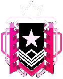
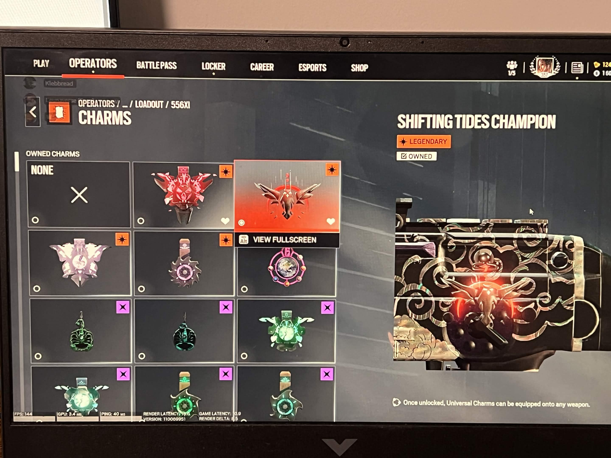

Champion
Rainbow Six Siege · Operation Shifting Tides
How rare is Champion?
Champion sits above Diamond as the terminal rank of Siege's ladder, and it is gated twice: you need 5,000+ MMR, and you need at least 100 ranked matches in the season before the game will even award it. That second gate matters: it means Champion can't be a lucky streak. In a typical season only around 0.2% of the ranked population clears both bars, putting it in the same rarity class as the top tiers of any competitive ladder.
sources: Ubisoft: Matchmaking Rating · Esports Tales rank distribution
Exhibit A: the Champion charm

Seasonal rank charms in Siege are awarded automatically at the end of a season, only at the rank you finished. The Shifting Tides Champion charm cannot be bought, traded, or earned any other way. Owning it is a permanent, in-game record that this account ended Y4S4 at Champion.
One life per round. Every decision is final.
Siege is the slowest, most deliberate of the big tactical shooters: rounds are 5v5 with no respawns, on maps where nearly every wall can be opened, reinforced, or shot through. Reaching the top of that ladder demonstrates a specific set of skills:
The MMR ladder
MMR bands from the 2019-era ranked system, when Shifting Tides was live. Most of the player base never leaves Gold.